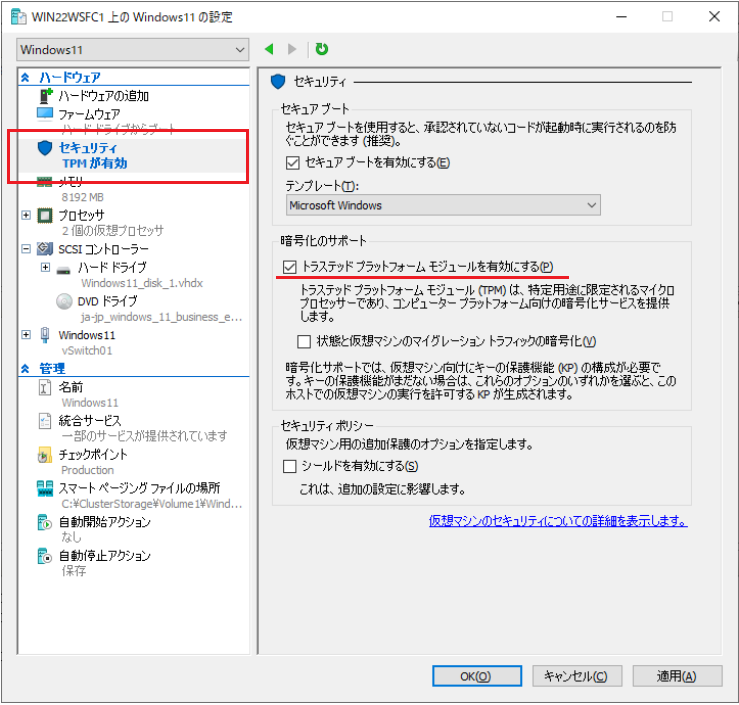

皆様こんにちは、System Center サポートチームの 石原 です。
今回は、SCVMM で トラステッド プラットフォーム モジュール (TPM) が有効な仮想マシンを管理する方法について説明します。
トラステッド プラットフォーム モジュール (TPM) について
SCVMM は Hyper-V 環境の統合管理システムですので、Hyper-V マネージャーやフェールオーバー クラスターマネージャーで設定可能な項目の多くは SCVMM コンソールから設定できます。ですが、一部の設定は SCVMM では対応しておらず、直接 Hyper-V やフェールオーバークラスターにて設定する必要がある項目があります。トラステッド プラットフォーム モジュール (TPM) は SCVMM コンソールからは設定できない項目の一つです。(※ SCVMM 2022 UR2 時点)
Windows 11 では TPM が有効であることがシステム要件になります。そのため、Windows 11 が稼働する Hyper-V ホストを SCVMM で管理する場合、TPM が有効な仮想マシンの管理が必要になります。
・Windows 11 の仕様とシステム要件
本記事では以下のケースについて手順を説明します。
１．TPM が有効な仮想マシンの作成方法
２．TPM が有効な仮想マシンの複製・テンプレート化方法
３．TPM が有効な仮想マシンのライブ マイグレーションができる環境の構築方法 (証明書方式)
１．TPM が有効な仮想マシンの作成方法
SCVMM コンソールから [新規仮想マシンの作成] にて Windows 11 を作成後、仮想マシンの電源を入れて Windows 11 OS のインストールを開始すると、以下のエラー画面が表示されて途中で失敗します。SCVMM による仮想マシンの新規作成では TPM が無効な仮想マシン が作成されますので、Windows 11 のシステム要件を満たさないためです。
■ Windows 11 インストール エラー画面
そのため、仮想マシンの電源 ON の前に Hyper-V マネージャーにて TPM を有効にしておく必要があります。
■ Hyper-V マネージャーにて仮想マシンの TPM を有効化

Hyper-V マネージャーにて該当仮想マシンの TPM を有効にすることで、SCVMM コンソールで該当 VM の電源をオンにして Windows 11 OS のインストールを進めることができます。（※ もちろん、このまま Hyper-V マネージャーで VM の電源をオンにして Windows 11 OS のインストールを進めることでも問題ありません。）
■ TPM を有効化することで OS インストール が進められます。
２．TPM が有効な仮想マシンの複製・テンプレート化方法
TPM が有効な仮想マシンは SCVMM コンソールの複製・テンプレート化のメニューが無効になります。
■ TPM 有効な仮想マシンの複製・テンプレート化 メニュー (※グレーアウトしています。)
Hyper-V マネージャーで一度 TPM を無効化したのちに、複製・テンプレート化します。
■ Hyper-V マネージャーで TPM を無効化すると SCVMM 管理コンソールの複製・テンプレート化メニューが有効になります。
注意
複製した仮想マシンやテンプレートから作成した VM は TPM が無効な状態です。Windows 11 コンピューターは TPM が有効であることがシステム要件のため、VM を電源オンする前に Hyper-V マネージャーで TPM 有効にしてください。
補足
TPM の有効/無効化は Hyper-V マネージャーの画面上での設定変更の他に Hyper-V コマンドでも実行することができます。
無効化：Disable-VMTPM (Hyper-V) | Microsoft Learn
有効化：Enable-VMTPM (Hyper-V) | Microsoft Learn
以下のスクリプトは Hyper-V ホスト上の VM の TPM 設定を一括で無効化/有効化するサンプルです。
※ Hyper-V ホスト上で実行してください。
■ Hyper-V ホスト上の仮想マシンの TPM を一斉に無効化
1 | $vmNames = Get-VM | Select-Object -ExpandProperty Name foreach ($vmName in $vmNames) { |
■ Hyper-V ホスト上の仮想マシンの TPM を一斉に有効化
1 | $vmNames = Get-VM | Select-Object -ExpandProperty Name foreach ($vmName in $vmNames) { |
３．TPM が有効な仮想マシンのライブ マイグレーションができる環境の構築方法 (証明書方式)
TPM が有効な仮想マシンをライブ マイグレーションするとエラー (10698) で失敗します。シールドされた VM をライブ マイグレーションする場合は、2 つ以上の保護されたホストをデプロイする必要があるためです。
■ ライブ マイグレーションがエラー (10698) で失敗
対処方法は以下の２つです。
方法１．ホスト ガーディアン サービス (HGS) サーバーに接続してホスト間でシールドされた VM を移行可能にする。
方法２．Hyper-V ホストに保存されている証明書を各ホストにインポートしてホスト間でシールドされた VM を移行可能にする。
方法１については、以下のサイトに詳細な手順の記載がありますので、こちらを参照してください。
保護されたホスト ファブリックをデプロイする
多数の Hyper-V ホストが存在する大規模環境では方法１の構成が推奨されますが、HGS サーバーが必要であることなど、準備が煩雑になります。Hyper-V ホストの台数が10台以下の環境では、証明書をお互いにインポートする方法２が簡潔になります。本記事では方法２について説明します。
=====================================================================
方法２：証明書を介した環境構築の詳細手順
=====================================================================
Hyper-V ホストに保存されている以下の証明書をライブマイグレーション先のホストにインポートすることで、ホスト間でシールドされた VM がライブ マイグレーション可能になります。
// 証明書
Shielded VM Signing Certificate (UntrustedGuardian) (ホスト名)
Shielded VM Encryption Certificate (UntrustedGuardian) (ホスト名)
TPM を有効にすると上記の 2 つの証明書が作成されます。これは、仮想マシンのキー保護機能を解除するために使用されます。ライブ マイグレーション先にこの証明書がない状態だと、上述のエラー (10698) が発生します。
以下の手順にて証明書のエクスポートとインポートを行います。
TPM を有効化した仮想マシンが稼働している Hyper-V ホストにログオンします。
管理者権限のコマンド プロンプトを起動します。
以下のコマンドを実行します。
1
certutil -store "Shielded VM Local Certificates"
以下の証明書のシリアル番号をそれぞれメモします。
Shielded VM Signing Certificate (UntrustedGuardian) (ホスト名)
Shielded VM Encryption Certificate (UntrustedGuardian) (ホスト名)
【実行例】以下のコマンドを実行して、それぞれの証明書をエクスポートします。
※ <パスワード> は任意になります。
※ <シリアル番号> は 4. で確認した番号を指定してください。1
2certutil -exportPFX -p <パスワード> "Shielded VM Local Certificates" <シリアル番号> <出力先フォルダ>\VMSigning.pfx
certutil -exportPFX -p <パスワード> "Shielded VM Local Certificates" <シリアル番号> <出力先フォルダ>\VMEncryption.pfx【実行例】
作成された 2 ファイルを別の Hyper-V ホストへコピーします。
別の Hyper-V ホストで管理者権限のコマンド プロンプトを起動します。
以下を実行して、証明書をインポートします。
※ インポートの際にパスワードが要求されますので、エクスポートの際に指定したパスワードを入力ください。1
2certutil -importPFX "Shielded VM Local Certificates" <配置先フォルダ>\VMSigning.pfx
certutil -importPFX "Shielded VM Local Certificates" <配置先フォルダ>\VMEncryption.pfx【実行例】
TPM を有効化した仮想マシンを証明書をインポートした Hyper-V ホストへ移行させて、正常に動作することを確認します。
上の 6. ～ 9. の作業をクラスターに参加しているノード (Hyper-V ホスト) 全てで実行します。お互いに証明書をインポートすることで、どの Hyper-V ホストに対してもライブ マイグレーションできるようになります。
SCVMM で TPM が有効な仮想マシンを管理する方法に関する説明は以上の通りです。
Windows 11 コンピューターが稼働する Hyper-V ホストを SCVMM で管理する際の参考にしていただけますと幸いです。
※本情報の内容（添付文書、リンク先などを含む）は、作成日時点でのものであり、予告なく変更される場合があります。